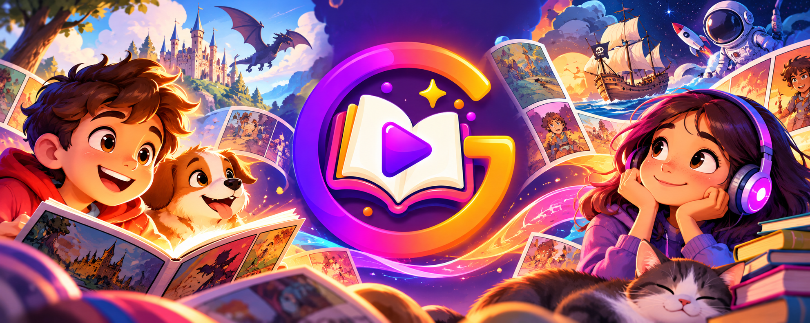

Carregando história…
Diagnóstico
Gimbol

Escolha uma aventura
Biblioteca
Histórias para ler no seu ritmo.
Continue lendo
Escolha sua próxima história
Baixando…
Fim da história
Quer viver essa aventura mais uma vez?